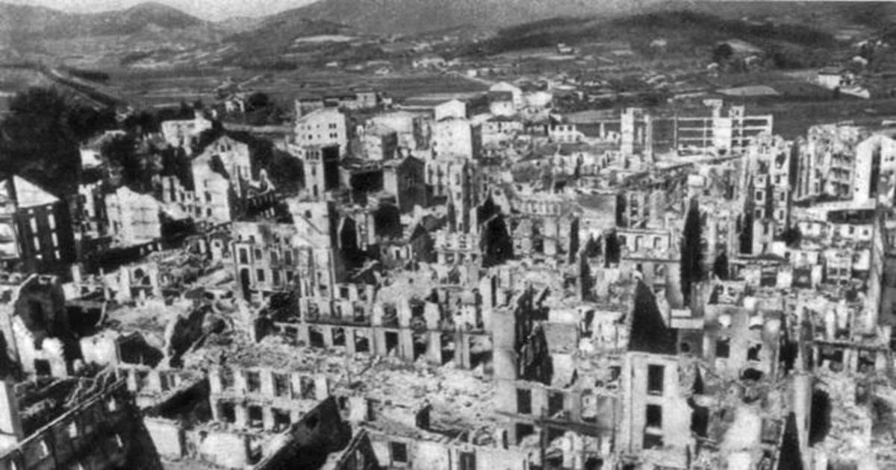

¿Qué fue?
El bombardeo de Gernika se refiere al bombardeo aéreo que sucedió sobre la ciudad vasca de Gernika el 26 de abril de 1937 durante la guerra civil española. Este bombardeo supuso un hito en la historia de españa al ser un acontecimiento tan terrible el cual no era ni siquiera causado directamente por la guerra civil española.
Contexto histórico
Gernika era una ciudad vasca que contaba con unos 5000 habitantes antes del ataque. Era simbolo de los fueros vascos y durante la guerra civil hasta su ataque, sirvio de refugio para muchos soldados republicanos que se preparaban para la defensa de Bilbao o de republicanos que escapaban de Franco. En las cercanías del pueblo de Gernika había tres fábricas que producían material militar como bombas aereas para el bando republicano durante la guerra civil. Se ha demostrado que el ataque a Gernika no fue más que una prueba de la potencia de destrucción que podía tener la legión condor Alemana y la legión aérea Italiana. Es decir, que el ataque de Gernika no fue estratégico durante la guerra civil, sino que el único uso que tuvo fue el de probar las armas extrangeras que más tarde se usarían durante la Segunda Guerra Mundial. Esto se puede comprobar también por el hecho de que Gernika era un pueblo relativamente pequeño y que no supondría mucho interés estratégico para las tropas Franquistas, lo cual sugiere que la razón del bombardeo de Gernika fue probar las bombas alemanas y no tanto atacar la ciudad en si. Aunque posteriormente se dijo que el objetivo había sido la destrucción de las fábricas cercanas, estas resultaron intactas ante el ataque. Es interesante el hecho de que dos días previos al ataque aéreo, se emitió un mensaje por la emisora de radio del bando sublevado con el siguiente contenido
Franco se dispone a propinar un fuerte golpe contra el que es inútil cualquier resistencia. ¡Vascos! Rendíos ahora y se os perdonará la vida.
¿Qué pasó?
El bombardeo sucedió durante el día 26 de abril de 1937, siendo comenzado este por un Dornier Do 17 alemán y tres Savoia S-79 de origen italiano. Este primer ataque tenía como misión la destrucción de todas las vias de escape desde el pueblo de Gernika, para poder así evitar la escapada de los soldados del bando republicano. El segundo ataque fue realizado por un número indeterminado de bombarderos alemanes He-111, sin embargo, el bombardeo más potente no llego hasta las seis de la tarde, protagonizado por diezinueve Ju-52 alemanes. Por último, una serie de Messerschmitt Bf-109 acompañados de cazas alemanes ametrallaron y dispararon a la población civil. Fue tanto el humo que causó el incendio y la destrucción causada por las bombas que los últimos aviones bombarderos tiraron las bombas ciegamente al no poder tener ninguna referencia visual del pueblo.
Una de las bombas utilizadas durante el ataque
Involucrados
Consecuencias
Durante el bombardeo se lanzaron sobre Gernika alrededor de 31 toneladas de bombas.Gernika que ocupaba menos de 1 km2 en la zona urbana, quedó totalmente arrasada. El 85% de los edificios (un total de 271) fueron totalmente destruidos y el resto parcialmente afectado.